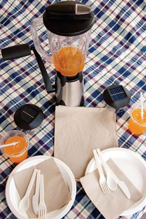
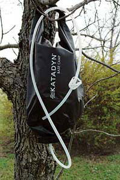
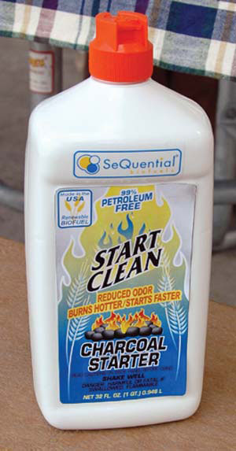

Outdoor parties, picnics and hikes can have a downside: most disposable products are not eco-friendly. Here are alternatives to help you travel lightly, enjoy nature and keep your gathering green.
Biodegradable plates
These sturdy plates are made from a natural byproduct of sugar refining. When the picnic’s over, just toss them in the compost pile. $21 for 125; Treecycle; (406) 626-0200
Compostable tableware
These plastic utensils, made from potato starch, are 100 percent tree- and petroleum-free. $6 for 50 forks, knives or spoons; Real Goods; (800) 919-2400
Compostable cups and straws
Drink up, confident you can toss these nonallergenic, corn-plastic cups and straws into your compost pile. $9 for 50 cups, $6 for 400 straws; Eco-Products; (303) 449-1876
Recycled napkins and towels
You can keep clean by using these unbleached, 100 percent recycled napkins and paper towels. $6 for 500 napkins, $11 for six 120-sheet rolls; Treecycle; (406) 626-0200
Hand-cranked blender
Concoct party drinks with the human-powered Vortex blender. The 48 ounce pitcher sits atop a stable, stainless-steel base that stores neatly inside the pitcher. $88; Real Goods; (800) 919-2400
Solar LED table lights
Set these luminaries (shown by the blender) in the sun during the day, then enjoy hours of safe amber light at your picnic or campsite. $20; Real Goods; (800) 919-2400
Clean-burning charcoal starter fluid
Forget the smelly smoke of petroleum starter fluid. This odorless, ethanol-based fluid is 99 percent petroleum-free, and burns hotter than standard fluids. $7 for a 32 ounce bottle; Real Goods; (800) 919-2400
Gravity-feed water filter
Thirsty? Just fill and hang the Katadyn Base Camp filter, equipped with an EPA-approved filter that removes bacteria and parasites from 5 quarts of water in 10 minutes, without pumping or chemicals. $59; L.L.Bean; (800) 441-5713
Bamboo cutting board
Prepare food for the grill on a bamboo cutting board. Bamboo is harder than maple and lighter than oak, absorbs little moisture, and it’s grown in quickly replenishing groves. $8 and up; Totally Bamboo; (818) 765-9000
|
 MATTHEW T. STALLBAUMER Choose eco-friendly alternatives to disposable picnic products. |
 MATTHEW T. STALLBAUMER The Katadyn Base Camp filter from L.L. Bean removes bacteria and parasites from water. |
 MATTHEW T. STALLBAUMER This ethanol-based, clean-burning charcoal starter fluid is 99 percent petroleum-free. |